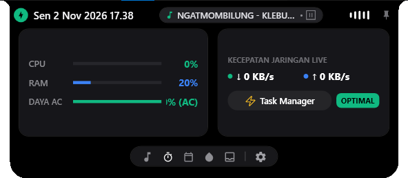
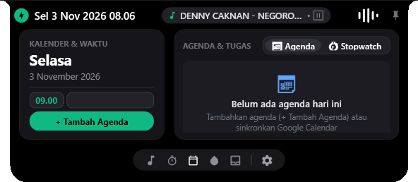
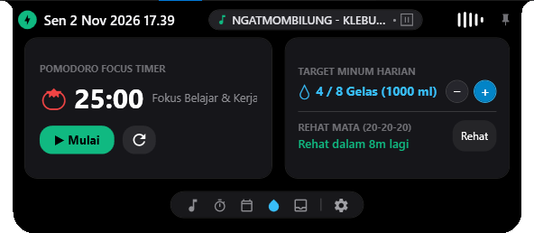
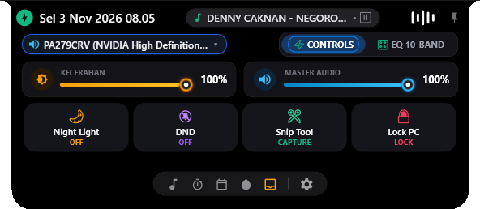
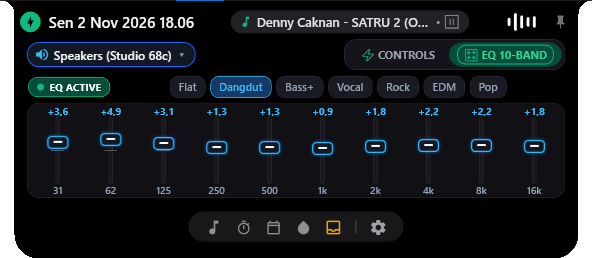
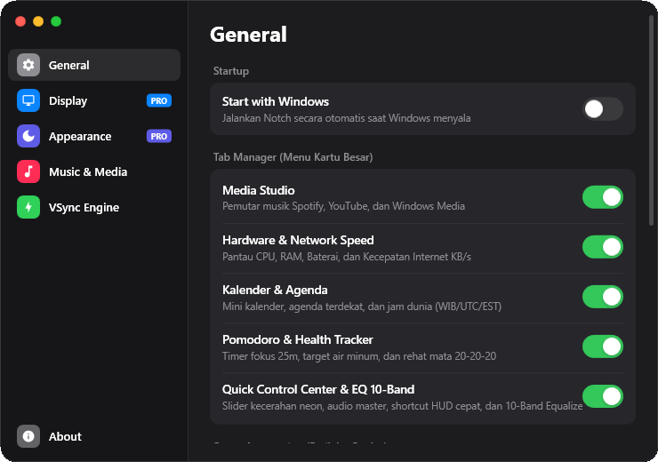
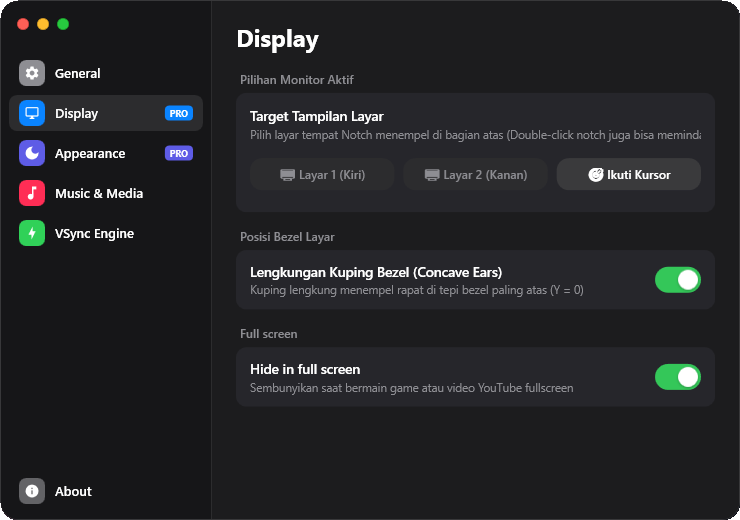
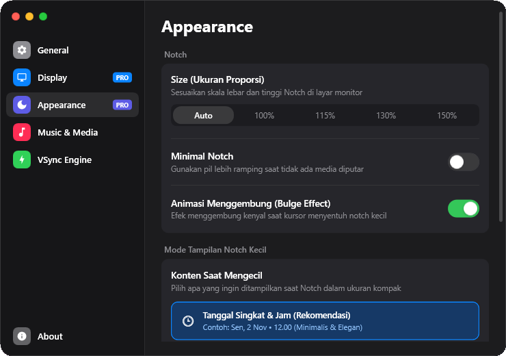
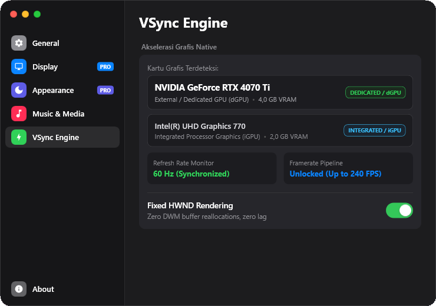

NarNotch mengubah ruang kosong di atas layar menjadi pusat produktivitas interaktif. Kontrol lagu favorit, monitor performa hardware, sinkronkan agenda Google Calendar, dan sesuaikan 10-Band EQ dalam satu sentuhan halus.





Dirancang menggunakan arsitektur native WPF yang ringan, cepat, dan hemat sumber daya baterai komputer Anda.
Kontrol musik dari Spotify, browser YouTube, atau media player Windows secara langsung dengan visualizer spektrum ritme audio yang dinamis.
Pantau beban performa PC Anda secara real-time tanpa perlu repot membuka Task Manager. Sangat berguna untuk gaming dan multitasking berat.
Tetap terorganisir sepanjang hari kerja. NarNotch terintegrasi langsung dengan Google Calendar API untuk menampilkan rapat dan agenda mendatang.
Produktivitas sejati dimulai dari tubuh yang sehat. Bento Suite menemani Anda menjaga fokus dan ritme istirahat di depan layar monitor.
Pusat kendali serbaguna Windows untuk akses instan ke pengaturan tampilan, suara master, dan pintasan utilitas tanpa membuka panel Windows.
Penyetel frekuensi audio presisi mulai dari 31 Hz hingga 16 kHz. Ditenagai profil nada khusus mulai dari Flat, Bass+, hingga racikan khas Dangdut!
Kustomisasi penuh setiap aspek Notch Anda melalui jendela preferensi bergaya Traffic Light macOS yang elegan dan terorganisir.




Atur kartu mana saja yang ingin diaktifkan di Notch dan aktifkan opsi mulai otomatis saat Windows menyala.
Pantau perkembangan fitur baru, peningkatan performa, dan pembaruan keamanan di setiap versi NarNotch.